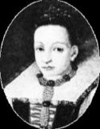

The original
portrait of the Countess from 1585 is lost (nicked
in the 1990s). However, this is a fairly contemporary
copy of that original, probably painted in the
late 16th century. She was 25 when the original
portrait -- the only known image of her -- was
painted.
Texto &
Pesquisa: Ryszard Rousseau III
Born, August 7, 1560, Elizabeth
was born Erzebet Bathory to a wealthy and prominent
family. She was the daughter of the Baron and
Baroness George and Anna Bathory. Highly educated,
fluent in Hungarian, German and Latin.
Engaged to Ferenc Nadasdy,
the "Black Hero of Hungary" at age
11.
Because the Nadasdy family
was of a lesser social status, Elizabeth kept
her name and her husband hyphenated his. Elizabeth
went to live with her future mother-in-law and
while there, a brief affair with a commoner
which produced a daughter, who was given, along
with money, to a commoner.
Becomes aware of effects
of blood.
While getting ready for
her husband's homecoming, Elizabeth was being
helped by one of her maids. The maid saw that
something was wrong with Elizabeth's hair dress,
but when she went to fix it, Elizabeth hit her
with a brush. So hard in fact, that blood was
drawn. Some of the maid's blood fell onto Elizabeth,
who cleaned it away in disgust. However, Elizabeth
noticed that the skin below the blood seemed
to be younger and more vibrant.
Married, May 8, 1575
Taking time off from the
ever-present war with the Turks, Ferenc came
home to marry his fiancée.
Husband teaches different forms of torture:
Honey torture: involving stripping the victim
naked, smearing honey over them, and leaving
them outside to be the victim of any insect
that happens by. Later, Elizabeth would use
her own version of this involving water and
a cold winter night. Reputed to be one of the
most beautiful women in all of Europe, beneath
is a portrait of the Countess.
The Countess
Torture devices of Elizabeth:
Iron Maiden: a coffin with
spikes in it. The spikes don't impale the victim,
but do cause bleeding. There are then two spikes
that are driven into the eyes causing (obviously)
blindness. The victim then slowly bleeds to
death.
Spiked Crows Nest: A cyndrical
cage, that is too narrow to sit in, and too
small to stand in. It had spikes on the inside
of it, and when the cage is
hoisted and rocked, the victims will skewer
themselves on it.
Variation: The cage is hoisted,
but the victim is poked at with a red-hot poker,
and impales themselves.Elizabeth would sit under
this cage, shout obscenities at her victim and
"soak" up the blood that dripped down.
Elizabeth was eventually
caught and brought to justice. Some say it was
because officials could no longer ignore rumours
circulating around the commoncommunity. Others
say that it was because Elizabeth, bored with
common blood, turned to that of royalty, who
were missed more than their commoner counterparts.
Whichever the reason, Elizabeth
was given two trials:
First trial: Held on January
2, 1611 at Bytca. (pronounced Byt-cha).
Seventeen testimonies including
her four accomplices, Helena Jo, Dorka,
Katharina, and Ficzko. Elizabeth was not alone
in her acts. She had four known accomplices,
perhaps others. A maid, identified as "Zusanna"
testified that she was aware of a list, written
in the Countess's own handwriting, of the names
of six hundred victims.
Second trial: Held on January
7, 1611.
Elizabeth was not allowed
at either trial. She was also never convicted
at either trial. This may have been to protect
the family name. It may have also been to keep
away the king. The king at the time owed a great
deal of money to the Bathory family, and if
she had been convicted, all debts would have
been cancelled.Three of her cohorts were sentenced
to horrible deaths and mutilations. Helena Jo
and Dorka were sentenced to have all the fingers
on their hands, (which they used as instruments
in so much torture and butchering and which
they dipped in the blood of Christians),torn
out by the public executioner with a pair of
red-hotpincers; thereafter they where thrown
alive on a fire.
Ficzko, her only male accomplice,
was sentenced to decapitation. His
body, drained of blood... reunited with his
two fellow accomplices where... he was burned.
Katharina was exonerated
by Dorka, Helena Jo and Zusanna, and was left
to be dealt with at a later date.
Elizabeth never having been
convicted of anything, remained for the rest
of her life walled up inside of her room, under
"Castle Arrest." The room was small,
and the only link to the outside world was through
a small opening for air and food to be passed
through.
On August 21, 1614, a guard,
who had never seen the countess, wanted to get
a look at her, who was still, at the age of
54, reputed to be one of the most beautiful
women in all of Europe. Looking in through one
of the slots left open for food and air, he
discovered Elizabeth lying face down.
The Blood Countess was dead.
Life of Elizabeth Bathory
taken from: see links page. (The version you
see here has been revised and edited and corrected,
e.g. spelling mistakes removed.)
Countess Elizabeth Bathory
c. 1560-1614
There are many legends about
vampires. However, there are official documents
proving the existence of an authentic seventeenth-century
countess, Elizabeth Bathory, who was the most
bloodthirsty vampiress of all time.
Elizabeth Bathory was born
in 1560 into one of the oldest and wealthiest
families in Transylvania. She had many powerful
relatives - a cardinal, princes, and a cousin
who was prime minister of Hungary. The most
famous Bathory was King
Steven of Poland. 1575-86.
Elizabeth was married to
Count Ferencz Nasdasdy when she was 15, he was
26. The count added her surname to his, so the
countess kept her name. They lived at Castle
Csejthe in the Nyitra country of Hungary. The
count spent a great deal of time away from home
fighting. His nickname was "The Black Hero
of Hungary". While he was away, Elizabeth's
manservant Thorko introduced her to the occult.
Elizabeth eloped with a dark stranger briefly,
but came home. Luckily the count forgave her.
Back at the castle, Elizabeth couldn't stand
her domineering mother-in-law. She began torturing
the servant girls with the help of her old nurse
Iloona Joo. Her other accomplices included the
major-domo Johannes Ujvary, Thorko; a forest
witch named Darvula and a witch Dorottya Szentes.
In 1600 Ferencz died and
Elizabeth's period of real atrocities began.
First, she sent her hated mother-in-law away.
Elizabeth was very vain and afraid of getting
old and losing her beauty. One day a servant
girl accidentally pulled her hair while combing
it -- Elizabeth slapped the girl's hand so hard
she drew blood, which fell onto her own hand.
She immediately though her skin took on the
freshness of that of her young maid. She was
sure she found the secret of eternal youthful
skin. She had her major-domo and Thorko strip
the maid, cut her and drain her blood into a
huge vat. Elizabeth bathed in it to beautify
her entire body.
Over the next 10 years Elizabeth's
evil henchmen provided her with new girls for
the blood-draining ritual and her blood baths.
But one of her intended victims escaped and
told the authorities about what was happening
at Castle Csejthe. King Mathias of Hungary ordered
Elizabeth's own cousin, Count Cuyorgy Thurzo,
governor of the province to raid the castle.
On December 30, 1610 they raided Castle Csejthe.
They were horrified by the terrible sights in
the castle - one dead girl in the main room,
drained of blood and another alive whose body
had been pierced with holes; in the dungeon
they discovered several living girls, some of
whose bodies had been pierced. Below the castle,
they exhumed the bodies of some 50 girls.
Elizabeth was put under
house arrest. A trial was held in 1611 at Bitcse.
She refused to plead guilty or innocent and
never appeared at the trial. A complete transcript
of the trial was made at the time and it still
exists today in Hungary.Johannes Ujvary, major-domo,
testified that about 37 unmarried girls had
been killed, six of whom he had personally recruited
to work at the castle. The victims were tied
up and cut with scissors. Sometimes the two
witches tortured these girls, or the Countess
herself. Elizabeth's old nurse testified that
about 40 girls had been tortured and killed.
All the people involved
in the killings, except the Countess Bathory
and the two witches were beheaded and cremated.
The two accomplices had their fingers torn out
and were burned alive. The court never convicted
Countess Elizabeth of any crime. Stonemasons
were brought to Castle Csejthe to wall up the
windows and doors of the bedchamber with the
Countess inside. They left a small hole through
which food could be passed. King Mathias II
demanded the death penalty for Elizabeth but
because of her cousin, the prime minister, he
agreed to an indefinitely delayed sentence,
which really meant solitary confinement for
life.
In 1614, four years after
she was walled in, one of the guards wanted
a look at this famous beauty. He saw her lying
face down on the floor. Elizabeth Bathory, the
"Blood Countess" was dead.
There are some connections
between the Bathorys and the Dracula's. The
commander of the expedition that helped Dracula
regain his throne in 1476 was Prince Steven
Bathory. A Dracula fief, Castle Fagaras, became
a Bathory possession during the time of Elizabeth.
Both families had a dragon design on their family
crests.
One thing I found out was
that the Countess, as a small child (4 or 5)
used to have quite violent seizures where she
would pass out. I do not think this was epilepsy,
but most likely some other neurological disorder
that may help to explain her horrific behaviour
as a young woman. The second thing is that when
her husband, the Count, was alive, he loaned
a large sum of money to the government. After
his death, and once the discovery of Elizabeth's
grisly activities was made, the government decided
that another reason to wall her up in her castle
was to avoid having to pay back the debt they
owned to her estate.
There have been many pictures
of The Countess, but which one is the real one??

Erzsébet original
according to McNally
Erzsébet original
according to Penrose
19th Century idea
of Erzsébet in Cachtice
17th Century idea
of Erzsébet in Cachtice
Picture and information
credit goes to Dennis Bathory-Kitsz (c) 1992-2001
his site can be seen @ www.bathory.org His site
is a MUST see site, jam packed with good information
on this beautiful, yet disturbing woman.
My opinions on these pictures
are that the first one is quite possibley more
convincing than the others. But the last one
really puzzles me because her apperance is that
of a woman from India, also the art is very
similar to that of Inidan paintings, if you
look at the shape of the mouth, nose, eyes,
and eyebrows.
VISITE O SITE DAQUELES QUE APOIAM
E ACREDITAM NO TRABALHO DA METALLORDZ WEBFORCE